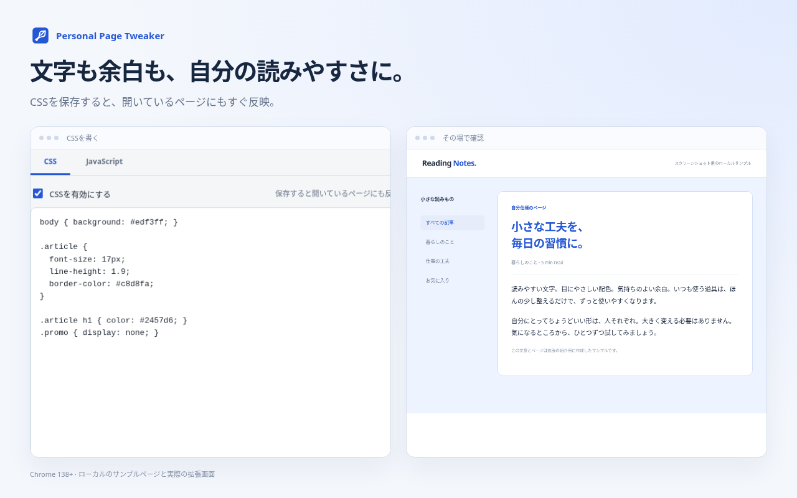
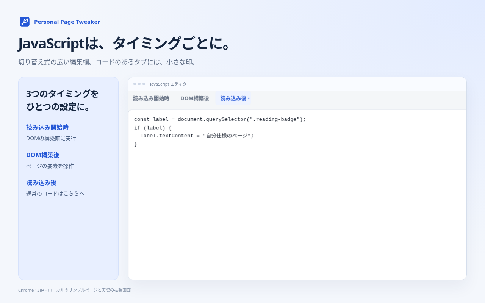

CSSはその場で反映
保存・停止・削除を開いているページにも反映。文字、配色、レイアウトを調整できます。
CSS + JAVASCRIPT · CHROME 138+
文字を読みやすく、余白を広く。少しのCSSやJavaScriptをサイトごとに保存して、自分のブラウザーの中でページを整える拡張です。

保存・停止・削除を開いているページにも反映。文字、配色、レイアウトを調整できます。
読み込み開始時・DOM構築後・読み込み後に、別々のコードを登録。切り替え式の広い編集欄で管理できます。
対象URLと除外URLを設定し、必要なサイトへのアクセスを許可。CSS・JavaScript・設定全体をそれぞれ切り替えられます。
設定名、URL条件、CSS、JavaScriptをローカル保存。JSONのExport/Importと、ローカルの.user.js取り込みに対応します。

JavaScriptを使う場合は chrome://extensions/ でこの拡張の「詳細」→「ユーザースクリプトを許可する」をオンにしてください。CSSだけの場合、この設定は不要です。
登録したJavaScriptは対象ページの情報を読み取ったり、コードに従って通信したりできます。内容を確認したコードを登録してください。JavaScriptの変更は対象ページの次の読み込みから反映します。
Chrome内部ページやChrome Web Storeなどでは実行できません。Tampermonkey / Greasemonkeyとの完全互換ではありません。
Personal Page Tweaker stores your own CSS and JavaScript for individually permitted websites. It supports three execution timings, local backup/restore, and light/dark appearance. The settings interface is in Japanese.
Page URLs are matched locally, and your code changes the permitted page's content or appearance. The developer receives no data. User-supplied scripts may read page information and communicate as written. Read the privacy policy and permission explanations for details.